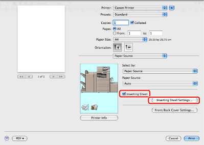
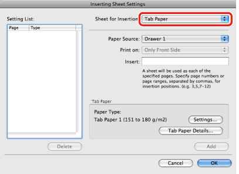

You can insert tab paper into a document.
1.
From the [File] menu of the application software, select [Print].
The [Print] dialog box is displayed.
2.
3.
Select the paper source for body pages of the document from [Paper Source].
4.
Select [Inserting Sheet] → click [Inserting Sheet Settings].

The [Inserting Sheet Settings] dialog box is displayed.
|
NOTE
|
|
The [Inserting Sheet Settings] dialog box may differ in appearance depending on the printer model you are using.
|
5.
Select [Tab Paper] from [Sheet for Insertion].

6.
Select the paper source for tab paper from [Paper Source].
7.
Enter the page number where the chapter page is to be inserted in the document in [Insert].
|
NOTE
|
|
If chapter pages are to be inserted in multiple locations, separate the locations using commas.
|
8.
Specify the width to shift the image to be printed on the tab part of the paper in [Shifting Width].
|
NOTE
|
|
Depending on the printer model you are using, this option may not be available.
You can change the unit of measurement by clicking [Millimeter] or [Inch].
|
9.
Click [OK] in the [Inserting Sheet Settings] dialog box.
10.
Click [Print] in the [Print] dialog box.